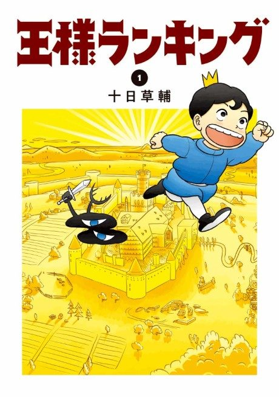

Animeter
 Anime
Anime
Manga2021 · Action, Adventure, Drama
Ranking of Kings
王様ランキング
AniList8.3
Animeter—
2 seasons33 ep
MangaCh. 156
Key events
These are spoilers. They stay blurred until you reveal them, one at a time or all at once.
Prince Bojji Ep 1–3
- Bojji meets Kage, the last of the Shadow Clan, and the two become friends.
- King Bosse dies and the council crowns Bojji's younger half-brother Daida instead of Bojji.
Bojji's Journey and the Underworld Ep 4–10
- Bojji's sword teacher Domas, under orders, tries to kill him on the journey.
- Bojji ends up in the Underworld, where its king Desha's brother Despa agrees to train him.
- Kage's tragic past as a member of the persecuted Shadow Clan is revealed.
The Kingdom in Turmoil Ep 11–15
- The mirror spirit Miranjo helps resurrect Bosse inside Daida's body.
- Bosse's revival sparks war and division within the kingdom while Bojji races to return.
The Battle Against Ouken Ep 16–23
- Ouken, the cursed immortal brother of Despa and Desha, is revealed as the true mastermind behind Miranjo.
- Bojji fights using the swordsmanship he learned, and Bosse ultimately turns against Ouken.
- After the war, Daida remains king and Bojji leaves to build his own path toward becoming the greatest king.
The Treasure Chest of Courage Ep 24–33
- Queen Hilling gets an episode exploring her strength and past.
- Ouken's backstory shows how his father Satun cursed him with immortality and how it affected Despa and Desha.